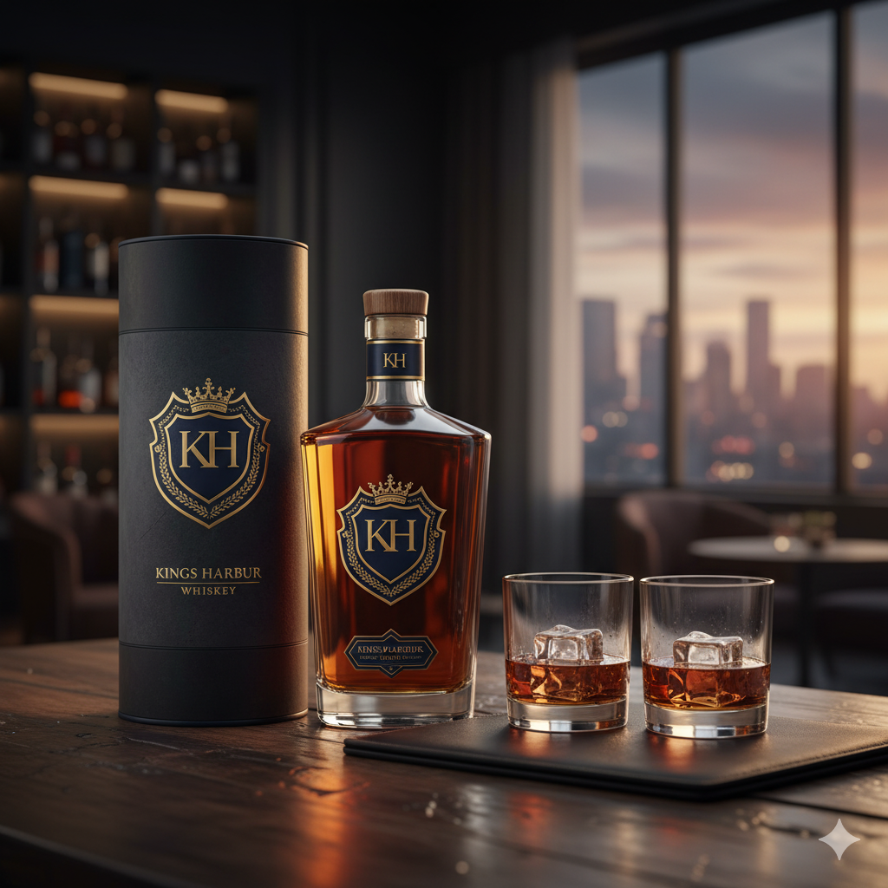
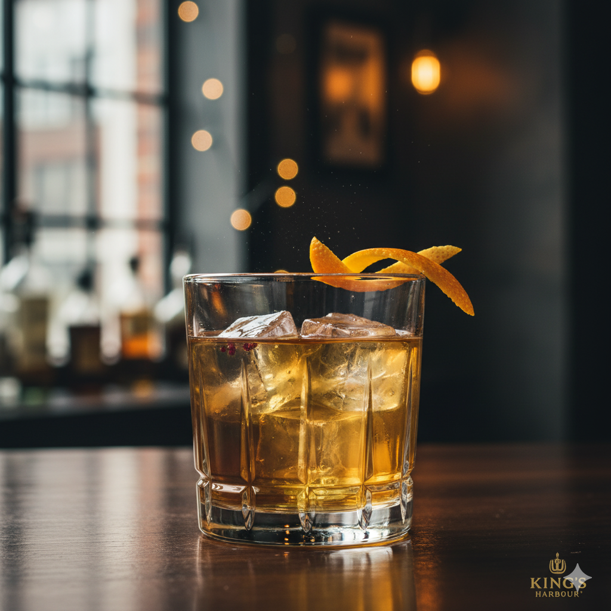
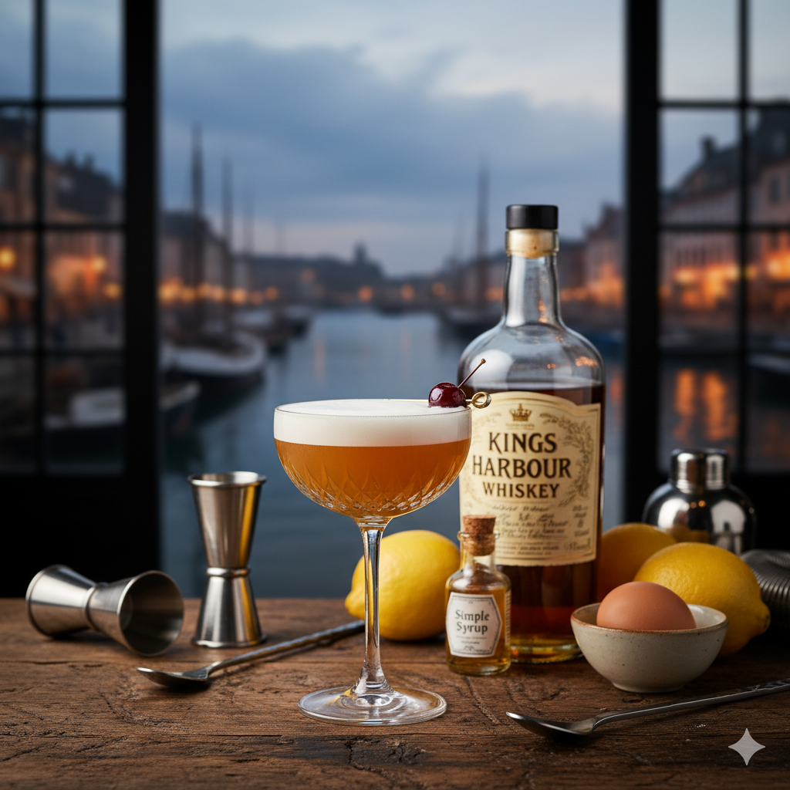
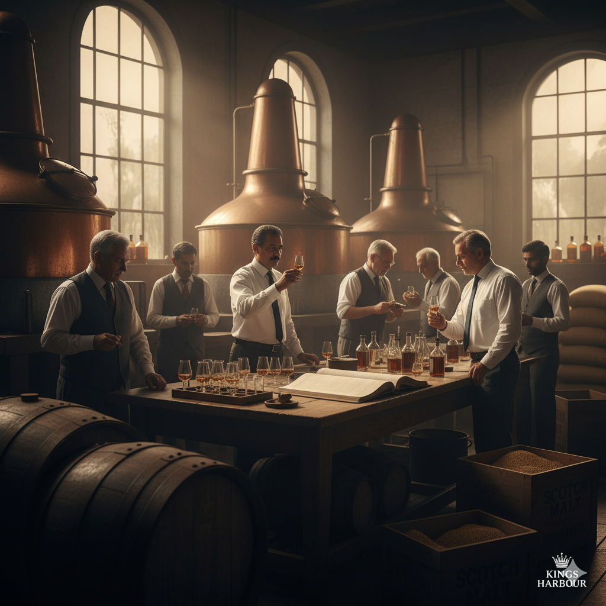
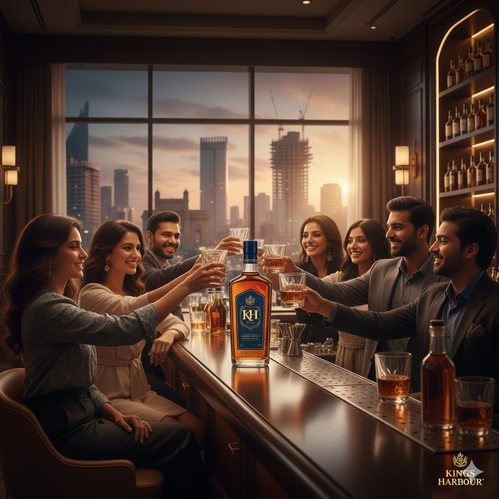

Established in 1966, Kings Harbour is a testament to the art of blending, masterfully combining matured
Indian grain with the finest imported Scotch.

"You Live Once, Live Like a King!"
The Whiskey Profile
A delicate balance of sweet vanilla and caramel,
layered with subtle hints of dried fruit and a gentle, warming spice.
Rich scents of honeyed malt and toasted oak greet the nose, followed
by faint notes of citrus peel and a touch of smokiness.
Exceptionally smooth and lingering. The finish is clean and warm,
with a lasting note of sweet toffee and oak spice.
Signature Cocktails

The King's Old Fashioned
60ml Kings Harbour Whiskey
1 Sugar Cube
2 Dashes Angostura Bitters
Orange Peel for garnish

Harbour Sour
50ml Kings Harbour Whiskey
25ml Fresh Lemon Juice
15ml Simple Syrup
1 Egg White (optional)
From Our Patrons
"Simply the smoothest blended whiskey I've had the pleasure of tasting. It has a
permanent place on my bar cart. Truly fit for a king."
– Arjun Mehta, Bengaluru
"Bought this as a gift for my father, a lifelong whiskey connoisseur. He was
thoroughly impressed with the complexity and balance. A new favourite in our family."
– Priya Sharma, Mumbai
"The perfect blend of Indian warmth and Scotch character. It’s my go-to for a
relaxing evening after a long week at work."
– Rohan Kapoor, Delhi
"Kings Harbour has a sophisticated taste that doesn't break the bank. It feels
luxurious, tastes premium. What more could you ask for?"
– Ananya Reddy, Hyderabad
"I served this at a dinner party and everyone was asking what it was. It’s a real
conversation starter. Exceptionally smooth on the rocks."
– Vikram Singh, Chennai
"As someone new to whiskey, I found Kings Harbour incredibly approachable. No
harshness, just a warm and pleasant flavour."
– Sneha Das, Kolkata
"The 'Live Like a King' motto isn't just marketing. There's a confidence to this
whiskey that I really enjoy."
– Sameer Patil, Pune
"Reminds me of a fine Speyside scotch, but with its own unique identity. A brilliant
achievement from an Indian distillery."
– Dr. Ishaan Nair, Goa
"My friends and I have made this our official drink for poker nights. It's a winner
every time."
– Aditya Verma, Chandigarh
"The subtle smokiness is just perfect. Not overpowering at all. It’s clear that a
lot of thought went into this blend."
– Kavita Joshi, Jaipur
"I appreciate a brand that respects its heritage. The 1966 story is fantastic, and
the whiskey lives up to it."
– Rahul Desai, Ahmedabad
"Excellent in an Old Fashioned. The whiskey's inherent sweetness complements the
bitters beautifully."
– Nisha Anand, Lucknow
"This has become my standard for celebratory toasts. It feels special, like you're
marking an occasion."
– Karan Malhotra, Noida
"I was looking for a premium Indian whiskey to share with my international
colleagues, and Kings Harbour was a massive hit."
– Divya Krishnan, Gurugram
"Smooth, rich, and full of character. It’s a delightful journey in a glass."
– Mohan Kumar, Kochi
"The finish is what got me. It’s long, warm, and satisfying. Leaves you wanting just
one more sip."
– Sunita Rao, Mysuru
"A fantastic product from Bengaluru! Proud to see our city producing spirits of this
quality."
– Rajeev Gowda, Bengaluru
"This is a dangerously easy-to-drink whiskey. The smoothness is just unparalleled at
this price point."
– Fatima Khan, Bhopal
"I love the balance. It’s not too sweet, not too smoky. The distillers have found
the perfect middle ground."
– Harpreet Singh, Indore
"Kings Harbour is now my secret weapon for corporate gifting. It's always received
with a 'wow'."
– Neha Gupta, Surat
Our Story: A Legacy Forged in Two Worlds
From a bold vision in 1966 to the spirit in your glass today, our journey is one of craft, ambition, and
a touch of rebellion.
1966 - The Harbour Lights Up
In an era of traditions, a visionary dreamt of a new legacy—a uniquely Indian whiskey crafted
to rival the world's best. In 1966, Kings Harbour was born.

1980s - The Art of the Blend
The secret to royalty is balance. Our master blenders spent years perfecting our
triple-distilled process, mastering the dance between Indian grain and imported Scotch.

2000s - A New Reign
As India stepped onto the global stage, so did we. We refined our spirit for a modern palate
and found our way into the finest establishments across the country.
Today - Your Kingdom Awaits
Today, Kings Harbour is a declaration. From intimate conversations to grand celebrations, it
is the spirit for those who build their own kingdoms. The legacy continues, with you.
The Ingredients: The Soul of the Spirit
Every element is chosen with purpose. Every drop tells a story. This is the alchemy behind Kings
Harbour.
The Indian Grain
The Heart of the Spirit
The Imported Scotch
The Character of the Blend
The Himalayan Water
The Purity of the Source
The Heart of the Spirit
Sourced from the sun-drenched fields of Punjab, our premium grain provides the robust,
sweet foundation and signature smoothness of our whiskey.
The Character of the Blend
We journey to the Highlands of Scotland for peated malt Scotch. This prized ingredient
lends our blend its complex layers and a subtle, defining smokiness.
The Purity of the Source
The lifeblood of our whiskey begins as pure water from Himalayan sources. Its crisp
profile ensures unparalleled purity, allowing the true character of the grains to
shine.
Contact Us: Request a Royal Audience
Whether for alliance, tribute, or counsel, our court is open. We look forward to hearing from you.
For Inquiries & Tributes
Send a message to the court. Our scribes will respond with haste.
For Trade & Alliance
To feature Kings Harbour in your esteemed establishment, please contact our Royal Chamberlain of
Commerce.